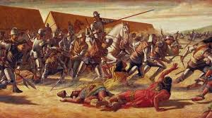
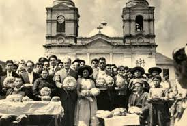
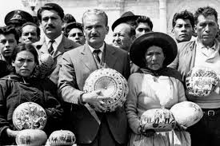
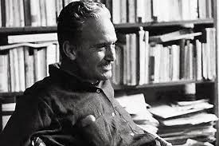
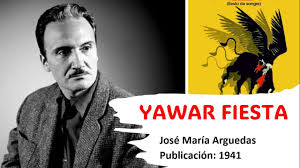
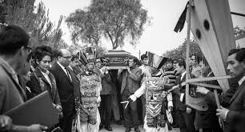

En el Perú, desde la época colonial hasta la actualidad, las comunidades indígenas han sido víctimas de una discriminación sistemática basada en su origen étnico, idioma y tradiciones culturales. Este problema sociohistórico ha generado profundas heridas en nuestra identidad nacional y mantiene vigentes estructuras de desigualdad.
José María Arguedas, escritor y antropólogo peruano, no solo documentó esta realidad, sino que la vivió en carne propia al crecer entre dos mundos: el indígena y el occidental. Su experiencia personal y su obra literaria nos ofrecen una ventana única para comprender la complejidad del racismo en el Perú.
José María Arguedas fue criado por sirvientes indígenas después de que su madrastra lo maltratara. Esto le permitió aprender quechua como lengua materna y comprender desde adentro la cosmovisión andina, convirtiéndose en un "puente cultural" entre dos mundos que parecían irreconciliables.
Esta investigación explora cómo la obra de Arguedas refleja y denuncia la discriminación racial, y por qué su mensaje sigue siendo relevante en la sociedad peruana contemporánea. Nos preguntamos: ¿De qué manera las obras de José María Arguedas revelan las estructuras de discriminación racial en el Perú? ¿Qué estrategias narrativas y lingüísticas utiliza para visibilizar esta problemática? ¿Por qué su mensaje sigue siendo relevante en la actualidad?
La discriminación racial en el Perú es un fenómeno complejo arraigado en nuestra historia desde la conquista española. Se manifiesta en actitudes, prácticas y estructuras sociales que privilegian lo occidental y marginan lo indígena, creando una jerarquía étnica que persiste hasta nuestros días.
José María Arguedas (1911-1969) ocupa un lugar único en la literatura peruana por su capacidad de narrar esta realidad desde una posición privilegiada: la de alguien que vivió entre dos mundos. Como hijo de un abogado blanco pero criado entre comunidades quechuas, Arguedas experimentó la división cultural del Perú no como un observador externo, sino como parte integral de su identidad.
Su obra trasciende lo meramente literario para convertirse en un poderoso testimonio antropológico y en una denuncia social. A través de sus novelas, cuentos y ensayos, Arguedas no solo documenta la discriminación racial, sino que propone un proyecto nacional integrador donde todas las culturas que conforman el Perú puedan coexistir en condiciones de igualdad.
La llegada de los españoles establece un sistema colonial basado en la jerarquización racial, donde lo indígena es subordinado.
La independencia no significó un cambio sustancial en la condición de los pueblos indígenas, que siguieron marginados.
José María Arguedas nace en Andahuaylas, en un Perú profundamente dividido entre el mundo andino y occidental.
Surge con fuerza el movimiento indigenista en la literatura y las artes, buscando reivindicar al indígena.
Arguedas publica "Agua", su primer libro de cuentos, donde ya muestra su preocupación por la discriminación.
Publica su primera novela, donde retrata el conflicto cultural entre lo andino y lo occidental.
"Su obra maestra, donde la discriminación racial se convierte en un eje central de la narración.
Arguedas se suicida, dejando inconclusa "El zorro de arriba y el zorro de abajo", obra que explora la migración andina a la costa.
La obra de Arguedas se desarrolla en un Perú marcado por profundas desigualdades sociales donde los indígenas y sus descendientes ocupaban los estratos más bajos de la sociedad. Este sistema discriminatorio se manifestaba en múltiples formas:
Este contexto sociohistórico es fundamental para comprender la obra arguediana, que no puede entenderse como simple ficción sino como un reflejo y análisis de las estructuras de discriminación que han marcado la historia peruana.
A través de su extensa obra literaria, Arguedas aborda la discriminación racial desde diferentes ángulos y con variadas estrategias narrativas. Sus textos no solo denuncian esta realidad sino que buscan tender puentes entre culturas.
En su primera novela, Arguedas contrasta las visiones del mundo andino y occidental a través de la corrida de toros, una celebración donde ambas culturas se encuentran y confrontan. La discriminación se manifiesta en las actitudes de las autoridades y mistis (blancos) hacia los indígenas.
Estrategia narrativa: Uso del multiperspectivismo para mostrar las diferentes visiones sobre una misma realidad.
Su obra más reconocida narra la historia de Ernesto, un niño que experimenta la discriminación desde su posición entre dos mundos. El internado religioso donde estudia se convierte en un microcosmos de las jerarquías raciales del Perú.
Estrategia narrativa: Uso de la perspectiva infantil para desnaturalizar las estructuras discriminatorias.
Esta novela presenta un amplio panorama social del Perú, donde las tensiones raciales se entrelazan con conflictos económicos y políticos. La llegada del capitalismo intensifica la discriminación pero también abre posibilidades de transformación social.
Estrategia narrativa: Construcción de personajes simbólicos que representan diferentes posturas ante la discriminación.
Uno de los aspectos más innovadores de la obra de Arguedas es su lenguaje. Como bilingüe quechua-español, desarrolló un estilo literario único que refleja las tensiones culturales y lingüísticas del Perú:
¿Cuál de las siguientes obras de Arguedas aborda la migración andina hacia las ciudades costeras?
Más de cincuenta años después de su muerte, la obra de Arguedas sigue siendo profundamente relevante para entender y combatir la discriminación racial en el Perú contemporáneo:
En el Perú actual, el 60% de la población se autoidentifica como mestiza y el 25% como indígena. Sin embargo, estudios demuestran que las personas con rasgos indígenas tienen menor acceso a empleos bien remunerados y enfrentan mayores obstáculos en el sistema educativo.
Arguedas propuso un proyecto nacional inclusivo que sigue siendo una aspiración para el Perú:
La obra de José María Arguedas constituye un valioso testimonio sobre la discriminación racial en el Perú que trasciende lo meramente literario para convertirse en un documento antropológico y en una propuesta política. A través de estrategias narrativas y lingüísticas innovadoras, Arguedas logró visibilizar las estructuras discriminatorias que han marcado la historia peruana desde la conquista española hasta nuestros días.
Su visión de un Perú intercultural, donde todas las tradiciones culturales puedan coexistir en igualdad de condiciones, sigue siendo un proyecto inconcluso. Los problemas que denunció —el racismo, la discriminación lingüística, la exclusión económica de las poblaciones indígenas— persisten en diversas formas en la sociedad peruana actual.
Sin embargo, su legado nos ofrece herramientas para comprender y enfrentar estos desafíos. Arguedas nos muestra que es posible construir puentes entre mundos aparentemente irreconciliables, como él mismo lo hizo a través de su vida y su obra. Su mensaje central sigue resonando con fuerza: la verdadera identidad peruana no puede construirse negando o subordinando ninguna de sus raíces culturales, sino a través de un diálogo respetuoso entre todas ellas.
En un mundo cada vez más consciente de la importancia de la diversidad cultural, la obra de Arguedas adquiere renovada relevancia como un ejemplo pionero de literatura intercultural que no solo denuncia la discriminación sino que propone caminos para superarla.
¿Cuál considerarías que es el principal aporte de José María Arguedas a la comprensión de la discriminación racial en el Perú?
Explora la riqueza literaria y el legado cultural de uno de los escritores más importantes de América Latina.
Leer sus obras completas